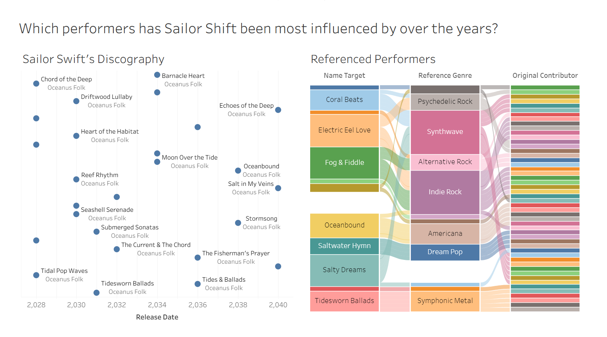
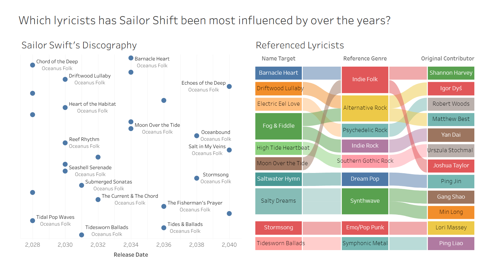
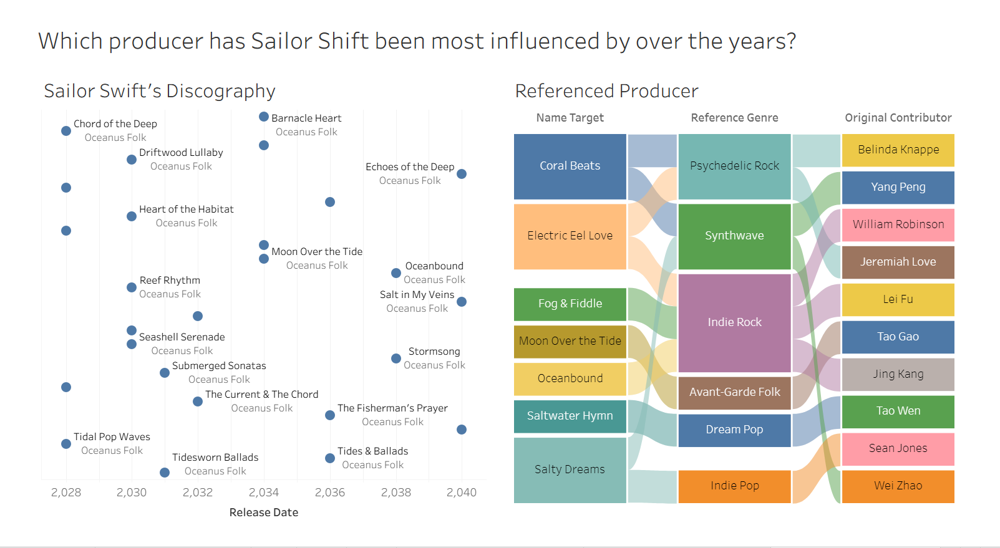
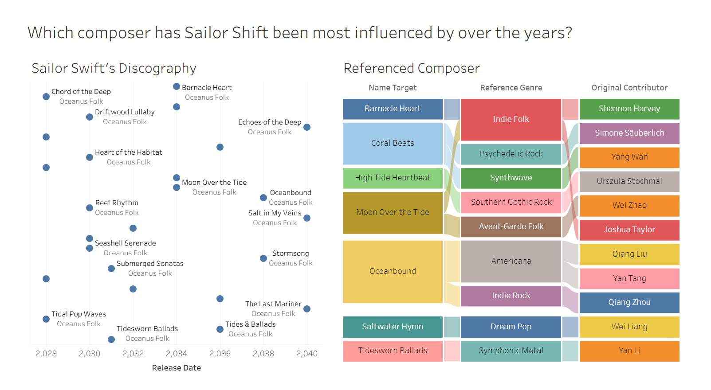
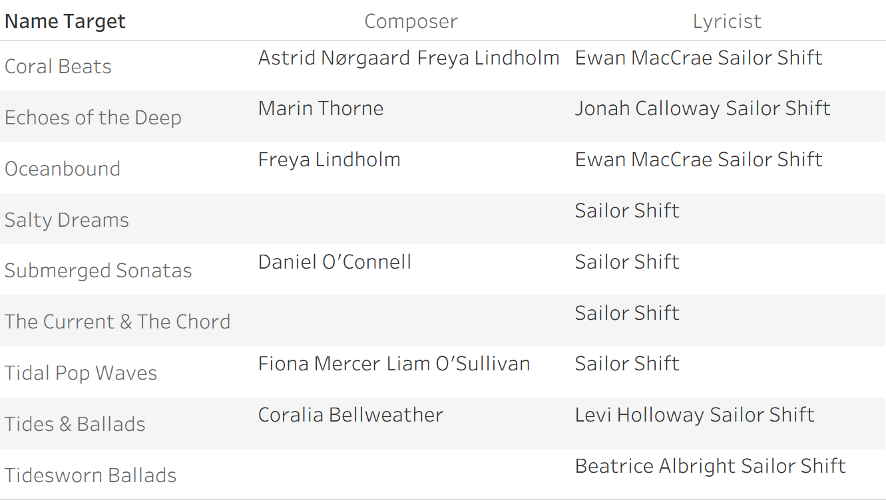
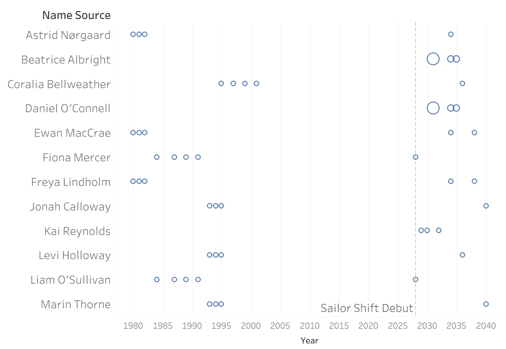
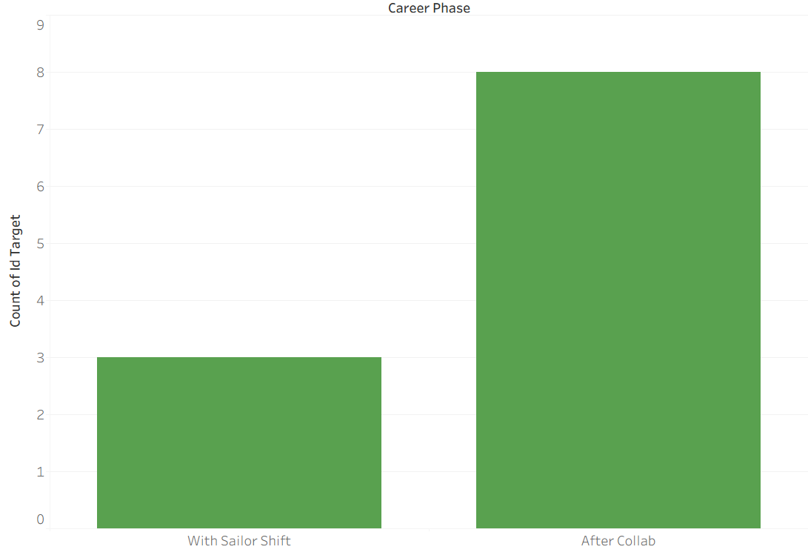
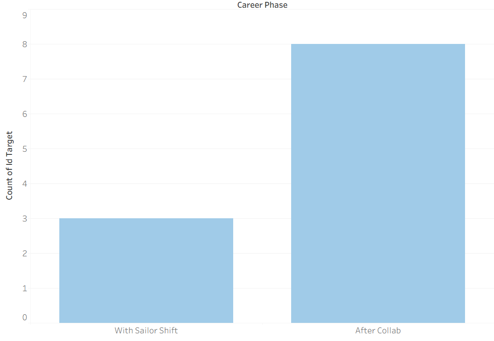
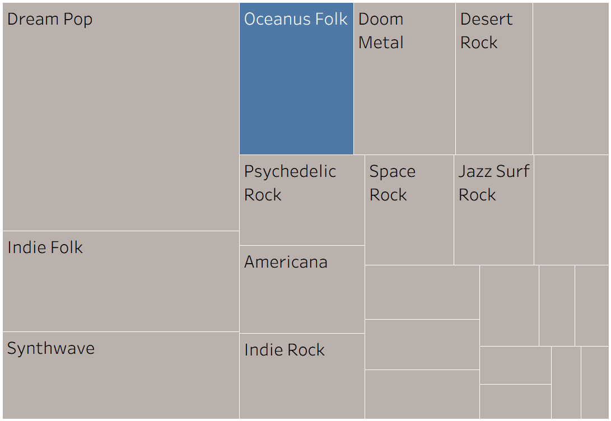
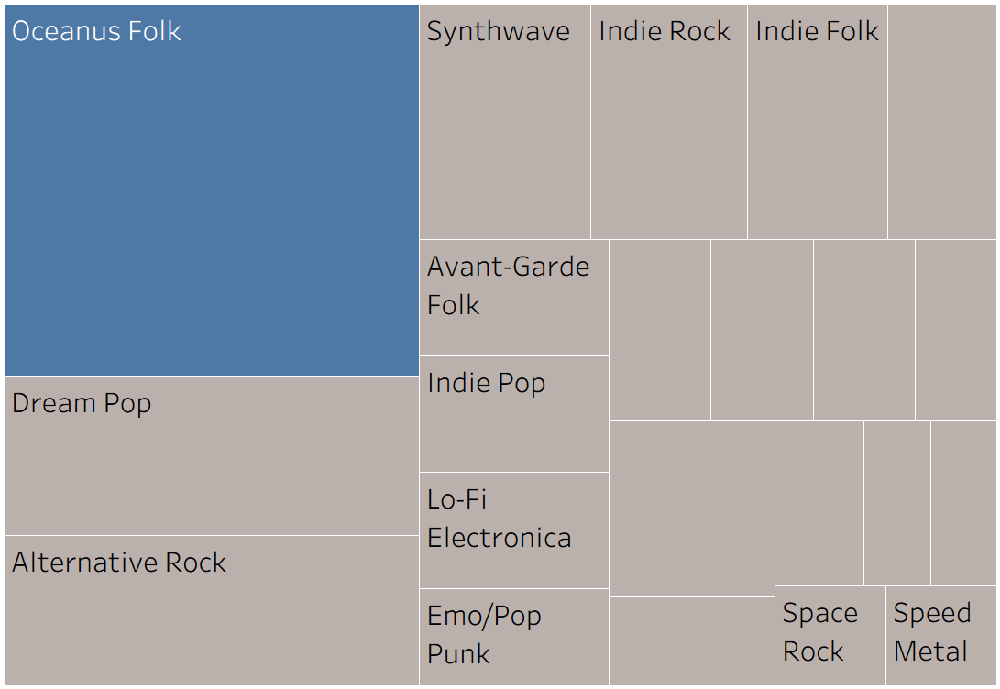

Results
Tableau
- https://public.tableau.com/app/profile/yi.ning.choo/viz/VastChallenge2025MC1Task1/SailorShiftsCareerProfile
- https://public.tableau.com/app/profile/saanvi.madan/viz/OceanusFolkgrowthovertheyears/OceanusFolkgrowthovertheyears
- https://public.tableau.com/app/profile/saanvi.madan/viz/InfluencesurroundingOceanusFolkMusic/InfluencesurroundingOceanusFolkinMusicIndustry
- https://public.tableau.com/app/profile/saanvi.madan/viz/ProfileofaRisingStar/ProfileofaRisngStar
- https://public.tableau.com/app/profile/saanvi.madan/viz/PredictedRisingStars/PredictedRisingStars
Tableau User Guide
Task 1: Understanding Sailor Shift’s Career Profile
Who has she been most influenced by over time?




Sankey Diagram -
To identify Sailor Shift’s primary influences, we analyzed the producers, composers, lyricists, and performers associated with the works she has referenced throughout her career. We chose to use Sankey diagrams because they effectively visualize the complex lineage of her inspiration.
In our dataset, there were no direct edges or nodes that explicitly defined who influenced Sailor Shift. Instead, the data was structured such that “Sailor song/album” nodes were connected to “person” nodes via an intermediate “source” node (representing a specific song or album by another artist).
By tracing these paths, we were able to map how individual contributors link back to her specific works. This indirect mapping allowed us to derive a comprehensive view of her influences.
Analysis: The resulting Sankey diagrams reveal a dense, interconnected web, indicating that her work does not stem from a single source. No individual contributor emerges as a dominant influence. Sailor Shift’s creative direction is guided less by specific individuals and more by broader musical movements, with genres such as Indie Rock, Synthwave, and Indie Folk serving as the foundational pillars of her sound.
Who has she collaborated with and directly or indirectly influenced?



Network Diagram -
A network diagram was used to map Sailor Shift’s professional network, as the dataset is inherently relational, making it the most appropriate visualization method. To identify who she has collaborated with, we first examined her previous bandmates and constructed a network diagram of her band connections. This allowed us to clearly visualize her immediate collaborative circle.
We identified the band Ivy Echoes and, from there, key collaborators such as Maya Jenson, Sophie Ramirez, Jade Thompson, and Lila “Lilly” Hartman. The network diagram highlights these individuals as central nodes within her early career collaborations.
Table - Beyond her bandmates, producers and composers also represent an important group of collaborators. For this subset, a table was used as it provides a clear and structured view of relationships. The table allows us to easily identify which individuals Sailor Shift worked with on specific songs across her career, making it effective for detailed comparison.
Ego Network -
An ego network was constructed with Sailor Shift at the center to further analyze her position and influence within the broader network. This visualization focuses on her direct connections while still providing insight into how she is referenced within the network.
Analysis: A key observation is that other artists in the dataset are typically referenced through specific songs or albums. In contrast, Sailor Shift is referenced as an individual node rather than through her works, for example, Claire Holmes. This suggests that her influence extends beyond her body of work, indicating that she functions as a broader creative archetype within the network.
How has she influenced collaborators of the broader Oceanus Folk community?





Dot Chart -
A dot chart was used to visualize collaborator activity, specifically tracking the release frequency of Sailor Shift’s collaborators over time. Each dot represents an individual collaborator’s release at a given point in time, allowing us to compare their activity levels before and after Sailor’s debut. We used her debut single in 2028 as a reference point to observe any shifts in release patterns. The dot chart makes it easy to identify trends such as gaps in activity, sudden increases in output, and overall changes in momentum.
Analysis: The most notable finding is that Sailor Shift’s debut marked a turning point for several collaborators. Multiple veteran artists experienced long periods of inactivity prior to 2028, followed by a clear resurgence in releases after collaborating with her. This suggests that her debut played a role in bringing established artists out of hiatus. Additionally, newer artists such as Beatrice Albright and Daniel O’Connell exhibit a different pattern—after collaborating with Sailor Shift, they significantly increased their output within the Oceanus Folk genre. This indicates that her influence not only revitalizes established artists but also helps shape the artistic direction of emerging ones.
Treemap -
A treemap was used to visualize the proportion of songs released across different genres, allowing for an easy comparison of genre dominance. We focused on two decades—the 2020s and the 2030s—to capture changes before and after Sailor Shift’s rise to fame. The size of each block represents the number of songs within a genre, making shifts in genre popularity immediately visible.
Analysis: The treemap highlights a clear shift in genre dominance over time. During the 2020s, Dreampop was the most prominent genre, dominating the musical landscape during Sailor’s early rise. However, in the 2030s, Oceanus Folk experienced a significant surge, overtaking other genres to become the most dominant. This transition suggests a strong correlation between Sailor Shift’s career trajectory and the rise of Oceanus Folk. While causation cannot be definitively established, the alignment of her growing influence with the genre’s expansion indicates that she likely played a key role in shaping this broader industry trend.
Task 2: Understanding the Influence of the Oceanus Folk Genre
Firstly, we wanted to understand the shift of Oceanus folk music over time, and to do so, we wanted to analyse the growth patterns of the genre in general.
Shift of Oceanus Folk Music Overtime
.png)
.png)
.png)
Cumulative Growth Area Chart
We began with a cumulative area chart of Oceanus Folk songs released over time. We plotted this cumulative graph to derive a foundational view of the genre, revealing the underlying momentum of the genre by smoothing out year-to-year noise.
Analysis: This graph shows that Oceanus Folk experienced slow, gradual growth from the 1990s to around 2015, followed by a sharp acceleration in the 2020s onward. The steep upward curve in later years suggests the genre has entered a rapid expansion phase, indicating rising global recognition and adoption rather than niche status.
Oceanus Folk Songs Control Chart
While the area growth chart outlines the overall growth experienced by Oceanus folk, it does not detail the year-by-year change in new songs released in the genre. By implementing a control chart, we were able to determine the volatility of the growth and better understand the fluctuation in the growth. To create this control chart, we used Upper and Lower Control Limits at a standard deviation of 1. Any year whose release count falls outside the UCL of ~148,858 and LCL of ~4112 was flagged as a statistically significant outlier (highlighted as orange points on the graph)
Analysis: The visualisation revealed that the yearly releases experience high volatility rather than steady growth, with several significant spikes (e.g., during the 2020s) which far exceed the average number of songs released for the Oceanus Folk genre over the years. This suggests that growth has been driven by periodic surges - possibly viral trends, major artist releases, or industry shifts rather than consistent output, reinforcing the idea that there are breakthrough moments that shape the genre.
Highlight Table of Genre Songs Over Time
To contextualise Oceanus Folk within the broader music landscape, we wanted to compare its yearly releases to other genres over the years. The heat-map style highlight table encodes volume of releases through colour intensity, allowing a reader to immediately spot which genres dominated in which eras, and crucially, to see where Oceanus Folk’s growth relative to other genres began to accelerate. Overall, this creates a comparative temporal view which situates the genre in light of the other genres, rather than isolating it.
Analysis: The highlight table shows that Oceanus Folk emerges later than many traditional genres but scales quickly in intensity, particularly from the mid-2020s onward. While earlier years are dominated by genres like Indie Folk, Dream Pop, and Doom Metal, Oceanus Folk begins to match and in some periods rival these established genres in output, indicating a strong rise in relevance rather than gradual integration. Another key pattern is that Oceanus Folk appears alongside a broad mix of genres rather than replacing any single one, suggesting it develops as part of a hybridised musical landscape. Its simultaneous presence with genres like Synthwave, Indie Rock, and Psychedelic Rock implies that Oceanus Folk is influencing and blending with existing styles, rather than competing directly for dominance.
Pareto Chart of Songs per Genre
Finally, we wanted to understand the overall genre distribution to assess how niche or mainstream Oceanus Folk is over the years. This Pareto chart is to identify which genres contribute the most to total song output, and to assess whether Oceanus Folk is a dominant driver of the music landscape or one of many smaller contributors. The inclusion of a yearly filter (e.g., 2030 - 2040) adds a layer of analysis that allows tracking of how this dominance changes over time. Instead of a static view, you can observe whether Oceanus Folk’s leading position is consistent, emerging, or declining across different periods, making it easier to link shifts in genre dominance to broader trends such as surges in popularity or diversification of the music landscape.
Analysis: By ranking genres and overlaying the cumulative percentage line, the chart makes it clear that a small number of genres account for a disproportionately large share of total releases, with Oceanus Folk playing a leading role in the 2030’s and genres such as Dream Pop, Indie Folk and Alternative Rock dominating in the early 2000’s. Additionally, the cumulative percentage line rises steeply at the start and then gradually flattens, demonstrating that after the top few genres, additional genres contribute progressively less, reinforcing a classic Pareto (80/20) pattern.
Influence of Oceanus Folk Genre
To answer the question of which genres and artists have been most influenced by Oceanus Folk, we designed two complementary visualisations - one at the genre level and one at the individual artist level.
.png)
.png)
.png)
Bar Chart - Top Genres Influenced by Oceanus Folk
A simple horizontal bar chart was used to compare the number of songs influenced by Oceanus folk across all the different genres. We then ranked the bars from highest to lowest to immediately communicate the genres with the most and least number of songs released that were influenced by oceanus folk songs. The bar chart also aids in making the dominance gap between genres instantly visible.
Analysis: The most striking finding is that Oceanus Folk itself has the highest count of influenced songs at 27, meaning the genre is most prominently influencing its own next generation of artists and tracks. Following this, Desert Rock is the strongest cross-genre recipient with 10 influenced songs, followed by Dream Pop at 8 and Indie Folk at 6. The genres at the tail end - Indie Rock, Americana, Jazz Surf Rock, Synthwave, Doom Metal- each indicate that while Oceanus Folk’s influence is broad, it is shallow beyond its natural stylistic neighbours.
Bubble Chart - Top Artists Influenced by Oceanus Folk
For the artist dimension, a bubble chart was chosen to display the artists most influenced by the Oceanus Folk genre. The bubble size is dependent on the influence score (higher influence score - larger bubble), and the shading of the bubbles is dependent on the number of works released by the artist(darker shading - larger no of released works). The influence score was derived by counting the number of unique songs that reference, cover, sample, or draw from any of the artist’s works (i.e. incoming influence edges pointing to their songs/albums). Specifically, it counted distinct source song IDs where the edge type was InterpolatesFrom, CoverOf, InStyleOf, LyricalReferenceTo and DirectlySamples. Since the bubble chart was rather populated, the top 20 artists were filtered for the final bubble chart.
Analysis: The bubble chart revealed that there was a vast number of artists influenced by Oceanus folk. Amongst them, the artist Chao Tan is the most influential artist, represented by by far the largest bubble in the chart - substantially bigger than all others. This level of dominance suggests Chao Tan has absorbed Oceanus Folk’s influence deeply and pervasively across their body of work, making them one of the most important carriers of the genre’s legacy at the individual artist level. Another notable artist is Yang Wan, who presents a significantly large bubble and very dark shading (high number of works released). This indicates that Yang Wan is significantly influenced by Oceanus Folk and has developed a significant number of songs in the genre, making them also one of the most important figures for the genre.
Bipirate graph - Artists and genres
The graph maps artists (pink) connected to genres (green), revealing which artists work across multiple genres. The density of connections around Oceanus Folk compared to other genre nodes immediately signals its centrality and reach in the musical network. The bipartite graph also allows you to visually identify which genre nodes share the most artists with Oceanus Folk. The gepah would also be able to highlight artist nodes that connect to both Oceanus Folk and multiple other genre nodes and allow us to identify bridge artists - those who carry Oceanus Folk’s sound into other parts of the musical world. Additionally, artists with a higher number of connections overall tend to be the most deeply embedded in the Oceanus Folk ecosystem, making them the most likely candidates for having both absorbed and spread its influence across genres, which would be well highlighted by the graph
Analysis: Based on the graph, genres like Indie Folk, Dream Pop, and Synthwave appear to have the heaviest cross-pollination with Oceanus Folk, suggesting that its influence has spread most strongly into these genres. Conversely, genres like Jazz Surf Rock and Space Rock appear more isolated with fewer shared artists, implying that Oceanus Folk’s influence has not penetrated as deeply into those areas.
Influence on Oceanus Folk Genre
.png)
Stacked bar Chart - Genres Influencing Oceanus Folk Music
To answer the question of which genres influence Oceanus Folk, we decided to create an interactive stacked bar chart that directly compares how much of its inspiration is drawn from itself and how much is drawn from other genres. At first glance, the stacked bar chart provides a clear representation of Oceanus Folk’s (blue) direct influence on itself and upon further interaction with the other genres, we can observe the breakdown of the exact genres that are influencing Oceanus Folk music each year. A 100% stacked bar chart was chosen as the primary visualisation because it normalises each year to a full 100%, allowing direct comparison of various genres’ proportional share of influence on the Oceanus Folk landscape year on year, regardless of how total song volumes fluctuate.
Analysis: The visualisation reveals that Oceanus Folk has been influenced by a variety of genres over the years, with no single genre having a dominating influence. Additionally, the number of genres influencing Oceanus folk each year is not consistent and rather volatile, with it drawing inspiration from multiple genres in some years and only one genre in other years. The graph also suggests that Oceanus Folk draws most of its contemporary inspiration from not only itself but also other genres that are both highly represented and stylistically aligned with it. In particular, Desert Rock and Space Rock stand out as the strongest influences over the years, with other genres having various influences.
Task 3a: Understanding Rising Stars in the Music Industry
Profile of a Rising Star
To develop a profile of what defines a “rising star” in the music industry, we first established clear metrics for popularity and influence based on our dataset. Popularity was measured by both the total volume of songs released and the proportion and number of notable works, reflecting not just productivity but also recognition and impact. Influence, on the other hand, was captured through the number of collaborations and the artist’s connectedness within the industry, as highly collaborative and well-networked artists are more likely to shape musical trends and reach wider audiences.
Using these criteria, we identified three representative artists: Megan Bennet, Urszula Stochmal, and Sailor Shift. Each artist was selected for dominating their respective eras - Megan Bennet in the 1980s–1990s, Urszula Stochmal in the 2000s–2010s, and Sailor Shift in the 2020s–2030s, based on their strong performance across both popularity and influence metrics.
By visualising and comparing their career trajectories, we are able to highlight both common patterns and key differences in how artists rise to prominence over time, ultimately building a more comprehensive understanding of what it means to be a rising star in the evolving music industry.
.png)
Line Charts - Released Works Overtime, Notable Works Overtime
Given our approach of measuring popularity through both volume of output and quality of recognition, we first plotted simple trend lines of released works and notable works as two separate cumulative line charts for our 3 chosen artists.
Analysis: Our charts revealed that all 3 artists revealed a common trajectory of strong and steep trend lines in their early careers for both released and notable works before eventually stabilising (yet to be observed for Sailor shift - current rising star). Additionally, the graphs suggest that a rising star is characterised not just by increasing productivity, but by the ability to convert releases into notable works at an accelerating rate, with all 3 artists having a significantly high proportion of notable songs throughout their career. Looking specifically at Sailor Shift, we observe the explosive modern archetype - rapid, high-volume, high-recognition entry that reflects how the contemporary music industry rewards artists who can generate both quantity and impact quickly. The fact that Sailor Shift achieves comparable notable works in a fraction of the time is a defining characteristic of what a rising star looks like in the current era. Overall, while the pace of this rise has increased across generations, the core pattern remains consistent: early momentum, rapid growth in recognition, and eventual consolidation at a high level of output and influence.
.png)
Artist Ancestry Network Chart
To categorise the influence of a rising star, we built an influence ancestry network diagram. By mapping directed influence - such as samples, covers, and stylistic homages - this visualisation documents the direct transfer of cultural authority from established legends to newcomers, effectively proving their musical legitimacy. Furthermore, the graph uncovers hidden support systems by highlighting high-quality industry connections, like elite producers or legacy songwriters that act as leading indicators of success long before an artist tops the charts.
Our chart specifically focuses on our 3 rising stars (blue centres) and how they were linked to different aspects of the music industry. The chart displays works (green circles - songs, orange circles - Albums) and highlights the artists (purple circles) and songs their works draw inspiration from, with larger nodes indicating artists or works with more relationships, meaning they are either influencing more people or being influenced by more sources. Overall, the graph displays the connections that the 3 rising stars have with other artists, what works they are inspired by and what works they are influencing.
Analysis: Megan Bennett sits prominently in the graph with a large blue node and extensive connections radiating outward, confirming her deep embeddedness in the network built over her long career. Her connections are broadly distributed, reflecting decades of collaboration and influence accumulation.
Urszula Stochmal appears with a similarly large blue node, and her cluster of connections appears dense and interconnected, suggesting strong influence within a particular community of artists and works rather than the broad dispersal seen with Megan Bennett.
Sailor Shift, despite being the newest entrant, exhibits a vast network of connections. While her node may be smaller relative to the other two, the connections she has accumulated in a compressed timeframe are striking, suggesting a distinct and identifiable web of future influence already forming.
Overall, the chart reveals that these 3 artists are highly influential figures in the music industry with deeply connected network graphs and draw inspiration from highly influential works and artists, categorising their rise to stardom.
.jpg)
.jpg)
Sankey Diagrams - Megan Bennet’s Influence, Urszula Stockmal’s Influence
To supplement the network ancestry graph, we also plotted the individual influence Sankey diagrams for Megan Bennett and Urszula Stochmal, which map out their works and the manner in which they have influenced new artists who draw inspiration from them. As Sailor Shift is a current rising star, she has had limited influence on the music industry, and thus, we have decided not to include her Sankey diagram. The Sankey diagrams further deepen the profile of a “rising star” by showing how each artist’s work translates into influence on newer artists through different types of musical connections and complements the wider Gephi ancestry diagram.
Analysis: For Megan Bennett, the diagram reveals a broad and evenly distributed influence across multiple pathways, particularly through “InterpolatesFrom” and “InStyleOf,” indicating that her music is frequently reinterpreted and stylistically emulated rather than directly reused. This suggests a form of influence built on strong artistic identity and longevity, where many different works contribute moderately to a wide network of newer artists.
In contrast, Urszula Stochmal’s influence is more concentrated and intense within specific channels, especially “InStyleOf” and “LyricalReferenceTo,” showing that her impact is more direct and recognisable in shaping the sound and thematic content of subsequent artists. Her works appear to generate stronger, more focused streams of influence, reaching a large number of new artists in a shorter span of time.
Together with the earlier popularity trends, these diagrams suggest that a rising star is not only defined by increasing output and notable works, but also by how effectively their music propagates through the network - either broadly over time(Megan Bennett) or intensely within a shorter period(Urszula Stochmal).
.png)
Artist Radar Chart
To get a better understanding and build a more extensive profile of our artists based on various metrics that define a rising star, we plotted a radar chart with 5 different spokes - Volume, Collaborations, Influence, Notable and Versatility. The Volume variable accounted for the number of works they had released. The Collaborations Node tracked the unique number of performers, producers, composers, and Lyricsists they had collaborated with before for a song or album. The Influence Spoke accounts for the number of unique songs they have inspired throughout their career and was calculated using songs that had InterpolateFrom, CoverOf, InStyleOf, LyricalReferenceTo and DirectlySamples references to the artist’s works. The Notable spoke tracked the number of notable songs the artist had released, and Versatility documented the number of genres the artist had released songs in. Overall, this was done to help us to build a comprehensive picture of what characterised a rising star.
Analysis: The radar chart suggests that a rising star is not defined by a single standout metric, but by a balanced combination of output, recognition, and industry connectivity, with influence emerging as the most distinguishing factor across all three artists. As observed from the visualisation, all 3 artists take the same shape in the radar chart, clearly defining what the profile of a rising star looks like. While Sailor Shift has a low influence score, this can be attributed to the fact that she is a current rising artist and has yet to influence the next generation of artists.
In general we find that Influence and collaborations tend to play an important supporting role, as artists with broader networks tend to have a stronger influence, reinforcing the idea that industry connectedness amplifies reach and impact. In contrast, metrics like volume and versatility are comparatively moderate across all artists, suggesting that simply producing more songs or working across many genres is not sufficient on its own to define stardom. Similarly, while notability (hit songs) is important, it does not differentiate the artists as strongly as influence does.
Overall, the chart indicates that a rising star is characterised by high influence supported by strategic collaborations, with volume, versatility, and notable works acting as foundational but not decisive factors.
Predicted New Rising Stars
Building on our defined profile of a rising star, we identified three emerging artists who best fit these characteristics. We first filtered our dataset to include only artists who had released at least one song after 2030, ensuring relevance to the current music landscape. This resulted in a pool of 42 artists, which we then refined by selecting those with both a high proportion of notable songs and a strong volume of releases, reflecting sustained popularity and recognition. From this subset, we further prioritised artists with strong industry connectivity and influence, as our earlier analysis showed these to be key indicators of rising stardom. Applying these criteria led us to identify three standout candidates - Julia Carter, Cassian Storm, and Claire Holmes - who best exemplify the qualities of the next generation of rising stars.
.png)
.png)
Predicted Stars Radar Chart
To further evaluate our predicted rising stars, we constructed a radar chart using the same five metrics - Volume, Collaborations, Influence, Notability, and Versatility. This ensures consistency with our earlier analysis and allows for a direct comparison between emerging and established artists. By visualising these dimensions, we are able to build a comprehensive profile of each predicted star and assess how closely they align with the characteristics observed in already successful artists. Analysis: The radar chart shows that the predicted rising stars are still in the early stages of their careers, with generally lower scores across most metrics compared to established artists, but clear signs of potential based on specific strengths. A key observation is that notability stands out as the strongest and most consistent metric across all three artists, particularly for Julia Carter, suggesting that early recognition through standout or high-impact songs is a defining trait of emerging stars. In contrast, influence and collaborations remain relatively low, indicating that these artists have not yet built the industry connections or long-term impact typically seen in more established stars, reinforcing the idea that influence develops later in an artist’s career.
Ancestry Network Chart for Predicted Stars
We also built an ancestry network diagram for the new predicted rising artists in order to validate and contextualise their potential, using the same lens that was applied to already established stars. While the network for famous artists demonstrates proven influence and well-developed industry embeddedness, constructing the same diagram for emerging artists allowed us to identify early signals of future success before it is fully realised. Specifically, it helps reveal whether these predicted stars are already connected to influential artists, producers, or legacy works, which, as previously determined, is a strong indicator of eventual stardom. Finally, the diagram helps uncover hidden pathways of influence and support systems for these new artists, such as recurring collaborators or shared sources of inspiration, which may not yet be visible through other metrics like volume or notability alone. This makes the ancestry network a useful tool for identifying credibility, trajectory, and the foundations of future influence. Analysis: This ancestry network shows that the predicted rising stars - Julia Carter, Cassian Storm, and Claire Holmes already exhibit early-stage but meaningful integration into the music industry, with distinct patterns that signal future growth. A key observation is that all three artists are embedded within established clusters of influential works and artists, rather than being isolated nodes. Their connections to larger green (songs) and orange (albums) nodes indicate that they are drawing inspiration from recognised and well-connected works, which lends credibility to their artistic development. This mirrors the early stages of the established stars’ networks, suggesting that strong foundational influences are a precursor to later industry impact. However, it is important to note that compared to the famous artists, their networks are less dense and more locally concentrated, reflecting their relatively early career stage. Nonetheless, while these artists are currently receiving more influence than being influence drivers, there are already signs of outgoing connections, indicating that their work is beginning to impact others. This transition, from being inspired by the network to contributing to it, is a critical step in becoming a true rising star.

Treemap - Genres of Predicted Stars
Analysis: We also observe that these emerging artists are producing music in genres that are currently prominent within the industry. Julia Carter is associated with Indie Rock, Claire Holmes with Synthpop, and Cassian Storm with Avant-Garde Folk. This alignment with popular and evolving genres suggests that their rise is not only driven by individual talent and networks, but also by their ability to position themselves within high-growth areas of the music landscape, further reinforcing their potential as future stars.